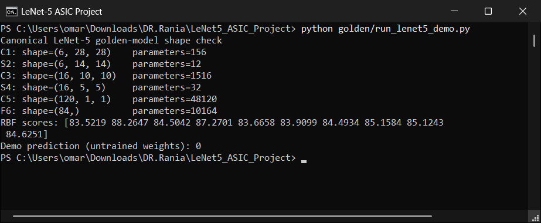
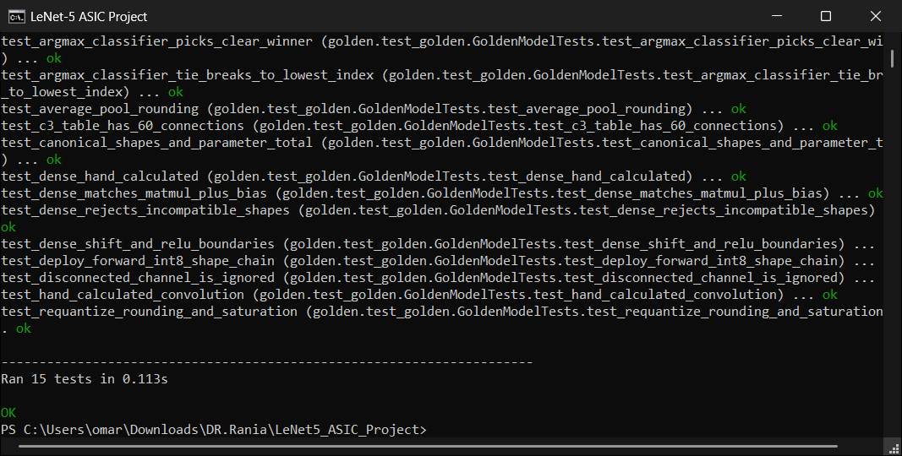
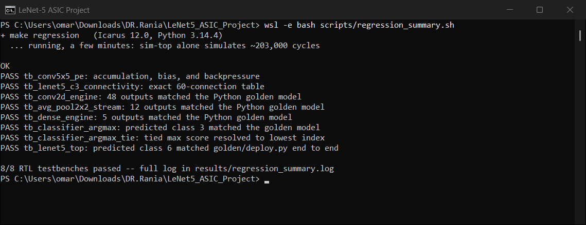
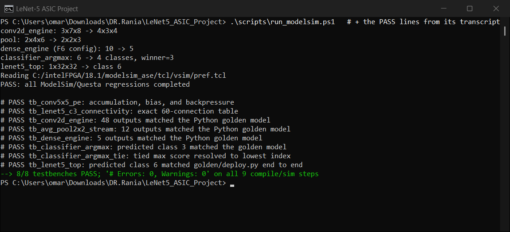
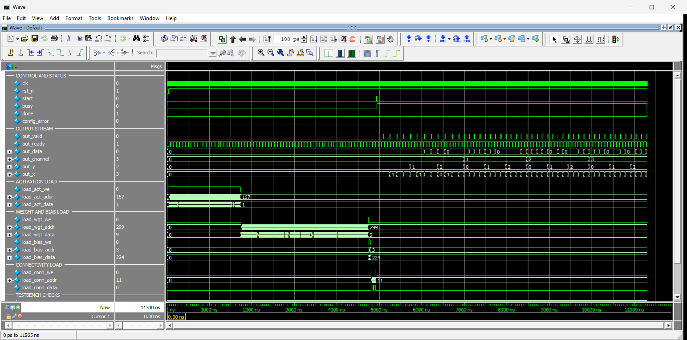
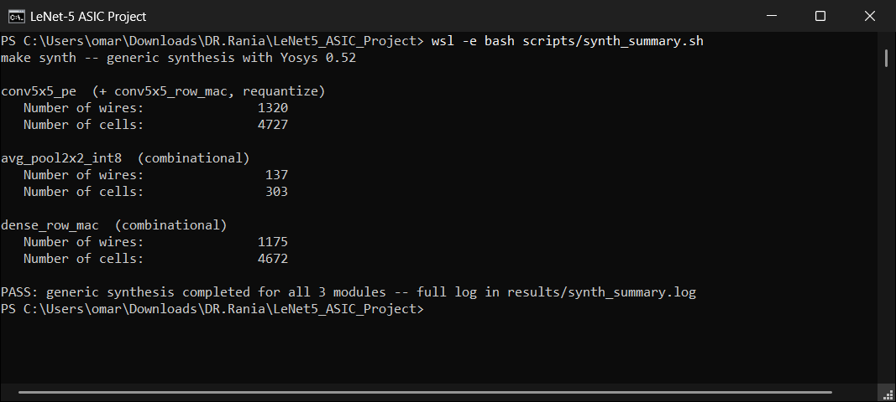
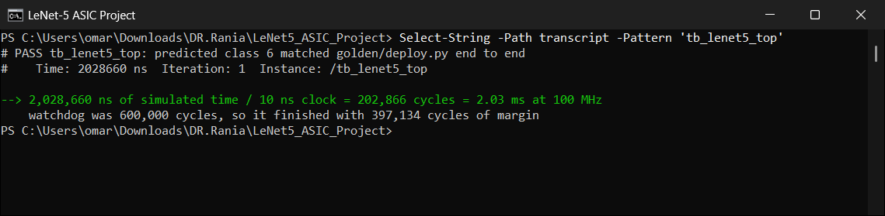

Seven captured screens, in the order you should present them · verified against the logs on 2026-08-08
Proves: we implemented LeCun 1998, not something loosely inspired by it.

The float64 reference network in golden/lenet5.py runs one forward
pass and prints the shape and trainable-parameter count of every layer, then the
ten Euclidean-RBF output scores, then its predicted class.
Anyone can produce the right tensor shapes. The parameter counts are the part that only comes out right if the architecture is right, and every one of them decomposes:
| Layer | Shape | Params | Where the number comes from |
|---|---|---|---|
| C1 | (6, 28, 28) | 156 | 6 maps × (5×5 kernel + 1 bias) = 6 × 26 |
| S2 | (6, 14, 14) | 12 | 6 maps × (1 trainable coefficient + 1 bias) |
| C3 | (16, 10, 10) | 1,516 | 60 connections × 25 + 16 biases = 1,500 + 16 |
| S4 | (16, 5, 5) | 32 | 16 maps × 2 |
| C5 | (120, 1, 1) | 48,120 | 120 × (16×25 + 1) = 120 × 401 |
| F6 | (84,) | 10,164 | 84 × (120 + 1) = 84 × 121 |
| Total | 60,000 | the figure quoted in the paper | |
RBF scores: [83.5219 88.2647 84.5042 87.2701 83.6658 83.9099 84.4934
85.1584 85.1243 84.6251]. RBF outputs are Euclidean distances to class
prototypes, so the network picks the smallest, not the largest. The
minimum is 83.5219 at index 0 — which is precisely the
Demo prediction: 0 printed underneath. The screen is internally
consistent, and you can walk the examiner through that in ten seconds.
golden/deploy.py. They are not required to agree, and with untrained
weights neither prediction means anything about digit recognition. Say so before
you are asked — volunteering it reads as rigour, conceding it later reads as a
patch.
Nothing about the hardware, and nothing about accuracy. The weights here are deterministic-random. This screen establishes one thing only, and establishes it completely: the architecture is the paper's architecture.
Answers the sharpest question in the review: “you checked RTL against a Python model — how do you know the model is right?”

Verbose unittest output: every test named in full, each ending
... ok, closing with Ran 15 tests in 0.113s and
OK.
Do not just say “15 tests pass” — a green bar proves nothing about what was checked. Read three names off the screen instead, because each one closes a specific way the oracle could be silently wrong:
| Test visible on screen | The failure it rules out |
|---|---|
test_hand_calculated_convolution | The convolution is checked against arithmetic worked out by hand — not against another NumPy call that could share the same bug. |
test_requantize_rounding_and_saturation | Pins the exact fixed-point rule: round half away from zero, ReLU, then saturate. This is the contract that makes bit-exact RTL comparison possible at all. |
test_c3_table_has_60_connections | Asserts the paper's sparse table numerically, so a typo in the mask cannot pass unnoticed. |
test_argmax_classifier_tie_breaks_to_lowest_index | Two equal top scores resolve deterministically to the lower index — an ambiguity that would otherwise differ between Python and RTL. |
test_dense_rejects_incompatible_shapes | Negative testing: the model raises rather than broadcasting silently. |
test_disconnected_channel_is_ignored | A masked-off C3 channel pair contributes nothing — sparsity is enforced, not decorative. |
Proves: all nine self-checking testbenches pass, end to end, in a freely reproducible toolchain.

The wrapper script runs the entire make regression target — Python
unit tests, lint/elaboration, every RTL testbench and the canonical demo —
then prints only the verdict lines, so the whole result fits on one screen
instead of scrolling past thousands of compile lines. The full transcript stays
in results/regression_summary.log.
tb_config_guard (the config-validation reject path) and the FSM
coverage and back-to-back inference checks now inside
tb_lenet5_top. The regression is 10 testbenches now, not nine,
and prints 15 PASS lines rather than eight. Re-run
wsl -e bash scripts/regression_summary.sh and re-shoot it; the script
now counts distinct testbenches and fails if any of the ten stops reporting,
so the screen cannot quietly show fewer tests than it claims.
| PASS line | What it verifies |
|---|---|
tb_conv5x5_pe | accumulation, bias injection and backpressure at the processing-element level |
tb_lenet5_c3_connectivity | the exact 60-connection table, asserted in RTL |
tb_conv2d_engine | 48 outputs matched the Python golden model, pixel for pixel |
tb_avg_pool2x2_stream | 12 pooled outputs matched the model |
tb_dense_engine | 5 dense outputs matched the model (F6 configuration) |
tb_classifier_argmax | predicted class 3 matched the model |
tb_classifier_argmax_tie | a tied maximum resolved to the lowest index |
tb_lenet5_top | predicted class 6, bit-exact against golden/deploy.py end to end |
Every one of these is self-checking: the testbench computes its expected
result from the oracle and calls $fatal on mismatch. There is no
eyeballed waveform anywhere in the pass/fail path — the waveform in A5 is for
explaining the design, not for judging it.
9/9 RTL testbenches passed -- full log in results/regression_summary.log
is not a hand-written banner: the script counts the PASS lines it
actually found in the log. If a testbench had failed, or had not run at all, the
count would not read 8 — so the summary cannot flatter the result.
tb_lenet5_top,
which now simulates 355,835 cycles because it runs the accelerator
twice — the same image, with no reset and no weight reload between the
two. A watchdog fires $fatal at 600,000 cycles, so the test still
finishes inside 59% of its budget, and that budget now covers two full
inferences — a hang cannot masquerade as a pass. Screen A7 shows the
per-inference cost the testbench measures and asserts directly.
Proves: the results are not an artifact of one particular tool.

Three things stacked on one screen. First golden/generate_vectors.py
writes the stimulus and the expected results for every testbench, echoing
the configuration of each as it goes. Then ModelSim/Questa Intel FPGA Edition
10.5b replays all nine testbenches, finishing on
PASS: all ModelSim/Questa regressions completed. Finally the
eight # PASS verdicts are pulled back out of ModelSim's own
transcript, so the individual results and the completion banner are visible
together rather than one scrolling away above the other.
The closing line carries the compile evidence too:
9/9 testbenches PASS; '# Errors: 0, Warnings: 0' on all 9
compile/sim steps. That is the “0 errors, 0 warnings across all 14
RTL and 8 testbench files” claim from page 1 of the presentation guide, shown
rather than asserted.
They are not decoration — they are where the headline numbers come from, and two of them tie directly to other screens:
| Line on screen | What it tells you |
|---|---|
conv2d_engine: 3x7x8 -> 4x3x4 | 3 input channels × 7 rows × 8 cols in, 4 output channels × 3 × 4 out. 4 × 3 × 4 = 48 — this is the origin of “48/48 outputs matched”. |
pool: 2x4x6 -> 2x2x3 | 2×2 average pooling halves both spatial dimensions: 2 × 2 × 3 = 12 outputs. |
dense_engine (F6 config): 10 -> 5 | A reduced dense layer, 5 outputs — enough to exercise the 8-lane datapath and its reduction tree. |
classifier_argmax: 6 -> 4 classes, winner=3 | Matches PASS tb_classifier_argmax: predicted class 3 in A3. Same number, two simulators. |
lenet5_top: 1x32x32 -> class 6 | The full canonical input, one channel, 32×32 — and the same class 6 the Icarus run reports. This is the cross-simulator agreement, visible on one line. |
# PASS lines are read back from ModelSim's
transcript file after the run, not printed live by the run itself —
the command line says so explicitly. That is a presentation convenience, not a
result being manufactured: the same eight verdicts, with their
# Errors: 0, Warnings: 0 summaries, are preserved verbatim in
results/modelsim_run.log. If anyone asks to see the raw run, open that
file. Note also that the project-root transcript is overwritten by
whatever ModelSim command ran last — the durable copy is the one in
results/.
Proves: the streaming interface behaves correctly under stress, not just on the happy path.

One command compiles the design, loads tb_conv2d_engine, applies a
curated and grouped signal set, runs to completion and zooms to fit — so
the window opens on a finished, readable simulation rather than a wall of
unsorted nets. The visible time range is 0 to 11,865 ns, with the cursor
at 11,300 ns.
Pass 1 — the handshake (CONTROL AND STATUS).
rst_n releases, start pulses once, busy
rises and stays high through the compute, and at the cursor done = 1
with busy back to 0. Critically, config_error is flat
at 0 for the entire run — the engine's guard against an illegal layer
configuration never fires. Point at that signal explicitly; it is the difference
between “it finished” and “it finished for the right reason.”
Pass 2 — the load phases. Before any arithmetic, three write-enable
bursts fill the activation, weight/bias and connectivity memories. The final
addresses on the left-hand value column are worth reading out, because each one
is exactly the configuration from screen A4 (3x7x8 -> 4x3x4) minus
one:
| Signal | Final address | Elements | Why that is the right number |
|---|---|---|---|
load_act_addr | 167 | 168 | 3 channels × 7 rows × 8 cols |
load_wgt_addr | 299 | 300 | 4 out × 3 in × 25 taps |
load_bias_addr | 3 | 4 | one bias per output channel |
load_conn_addr | 11 | 12 | 4 out × 3 in connectivity entries |
All four are consistent with each other and with the console output in A4. That is a cross-check between two independent screens, and it is the kind of detail that makes a reviewer stop probing.
Pass 3 — the output stream, and the deliberate cruelty. This is the
part to spend time on. out_valid is a gapped burst rather than
a solid block, because the testbench drops out_ready on a fixed
pattern — out_ready <= ((cycle_count % 7) != 3), roughly one cycle
in seven refusing data. Despite that, out_channel steps cleanly
0 → 1 → 2 → 3 while out_y and out_x
cycle beneath it, and all 48 tagged pixels arrive in order.
$fatals on mismatch. Say “here is what the checker was
checking,” never “here is how we verified it.” A reviewer who hears the
second version will ask whether anything was verified by eye.
Toolchain note: an open-source equivalent exists —
wsl -e gtkwave results/conv2d_engine.vcd — so nothing in this screen
depends on holding a commercial licence.
Proves: the arithmetic RTL is genuinely buildable — and this step caught a bug both simulators missed.

Generic synthesis of the three currently-synthesizable modules, reduced to the headline figures. These are the exact numbers quoted on page 1 of the presentation guide, so the guide is reproducible from the tool in one command:
| Module | Wires | Cells | Notes |
|---|---|---|---|
conv5x5_pe (+ conv5x5_row_mac, requantize) | 1,324 | 4,125 | 74 flip-flops (73 $_DFFE_PN0P_ + 1 $_DFF_PN0_) |
avg_pool2x2_int8 | 137 | 303 | purely combinational, no clock port |
dense_row_mac | 1,175 | 4,672 | purely combinational, 8 lanes |
The full log breaks the PE down, and being able to account for your own gate count is the difference between quoting a tool and understanding it:
| Sub-block | Cells | What it is |
|---|---|---|
conv5x5_row_mac | 2,870 | 5 signed 8×8 multipliers + explicit two-level adder tree |
requantize | 917 | 33-bit round-away-from-zero, ReLU, saturate — down from 1,554 after the rounding was rewritten as shift-then-increment (docs/PPA.md) |
conv5x5_pe glue | 340 | accumulator control, bias injection, and the requantize pipeline register |
| hierarchy total | 4,125 | the three sum to 4,127; cross-boundary optimisation accounts for the difference |
dense_row_mac's 4,672 cells are not anomalous. It has 8
lanes where conv5x5_row_mac has 5. That is 2,870 ÷ 5 ≈
574 cells per multiplier, so 8 × 574 ≈ 4,592, plus one extra
reduction level ≈ 4,672. The number falls straight out of the lane count.requantize is a third of the PE — and it is the first thing we
would optimise. shift_i is a runtime [5:0] input, so
Yosys must infer a full barrel shifter. Every layer actually uses
shift = 7. Fixing the shift at elaboration time would collapse most of
those 917 cells for zero functional change. Offer this when asked “what
would you improve?” — it is specific, measured, and it shows you read your own
synthesis report rather than just its last line.
dense_row_mac's original reduction tree used a procedural
while loop with a variable-stride for bound. It
simulated correctly in both ModelSim and Icarus. Yosys rejected it:
2nd expression of procedural for-loop is not constant. It was rebuilt as an
elaboration-time generate/genvar pairwise tree,
re-verified functionally identical in both simulators, and is now confirmed
synthesizable — which is why it appears on this screen at all.
Say: “This is why we insisted on running a real synthesizer instead of assuming simulation equals hardware. A tool you have not run is a claim you have not checked.”
proc; opt; fsm; opt; memory; opt; techmap; opt — no standard-cell
library, no timing arcs, no capacitance model, so no silicon area/power/frequency
from this screen. A cell count here is a complexity measure; anyone quoting
mm² or mW from generic-techmap output is inventing it. Only three of the
fourteen modules are synthesized here because the other four controllers hold
behavioural ROM and scratch arrays that a production design replaces with compiled
SRAM macros — synthesizing those without real memory macros would produce a
meaningless pile of inferred flip-flops.
docs/PPA.md and
asic/sta/results/ppa_summary.csv. Pre-layout (no place-and-route
yet), single typical corner, and the power number's switching activity is stated
rather than measured — but real cells, real Liberty timing arcs, real µm².
Proves: the headline performance number is derived from the simulator's own timestamp, not asserted.

The end-to-end verdict together with the raw simulator timestamp that produced it:
# Time: 2028660 ns Iteration: 1 Instance:
/tb_lenet5_top. Underneath, the arithmetic is spelled out rather than
left for the audience to trust.
conv2d_engine has since been pipelined: the accumulator is registered before it
reaches requantize, so the memory read, the row-MAC adder tree and the
requantizer's carry chain no longer share one combinational cycle
(docs/PPA.md). That costs exactly one cycle per convolution output pixel,
and both Icarus and ModelSim now independently report 2,092,900 ns = 209,290 cycles —
+6,424, which is precisely the number of conv output pixels (4,704 + 1,600 + 120). The table
below carries the current numbers; the image does not. Nothing about the derivation
this screen demonstrates has changed — only the timestamp it operates on.
| Step | Value | Where it comes from |
|---|---|---|
| Cycles per inference | 146,544 | counted start_i→done_o by the testbench and printed, not derived |
| Second inference | 146,544 | identical — asserted, so a drift of one cycle fails the run |
| Wall-clock equivalent | 1.47 ms | 146,544 × 10 ns at the stated 100 MHz |
| Cold path (host ROM load + 1 inference) | 209,290 | 146,544 compute + 62,746 loading all 62,730 ROM words |
Simulated time at $finish | 3,558,350 ns | the simulator's own timestamp, covering both inferences |
| Watchdog budget | 600,000 | vectors/config.svh |
| Margin | 244,165 | 600,000 − 355,835 — finished at 59% of budget, with two inferences inside it |
$finish timestamp. It is now
counted directly by the testbench between start_i and
done_o, printed, and asserted: if a scheduling change moves it by
a single cycle, the regression fails and tells you to update the documents. A number
that fails the build when it drifts is worth more than a number derived correctly
once.
lenet5_top is one
of the four controller modules that is still unsynthesized (behavioural ROM/scratch
arrays — see A6), so for the full pipeline, 100 MHz remains a stated reference
clock used for unit conversion: cycles are what was measured, the millisecond
figure is just cycles ÷ 100 MHz. What real timing closure does now
exist for is the arithmetic core underneath it — docs/PPA.md reports
whether conv5x5_pe itself actually holds 100 MHz against sky130hd,
which is worth checking before repeating the 100 MHz figure as if it were
closed timing for the whole chip.